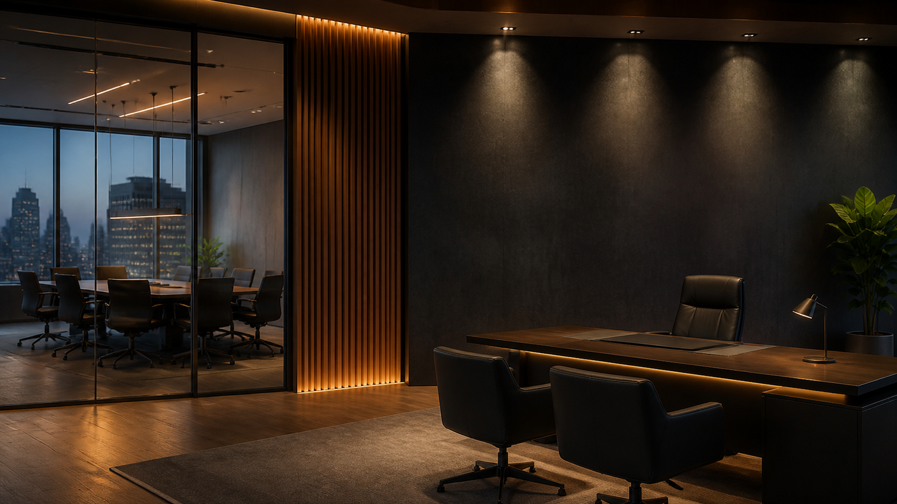

Performance industrial
Aumentamos eficiência, confiabilidade e produtividade dos ativos.
Estratégia. Performance. Conexões.
Transformamos estratégia, processos e conexões em performance sustentável para a indústria.
Aumentamos eficiência, confiabilidade e produtividade dos ativos.
Otimização de suprimentos, estoques e gestão de materiais.
Estratégia e execução para maximizar o ciclo de vida dos ativos.
Conectamos soluções, fornecedores e oportunidades de valor.
A Veltrian
Somos uma consultoria de performance industrial e gestão de negócios. Atuamos ao lado de líderes que buscam ganhos sustentáveis, com uma visão integrada de pessoas, processos e tecnologia.
Nossa forma de atuarSoluções sob medida
Foco no que realmente move a sua operação: produtividade, fluxo, previsibilidade e geração de valor.
Processos mais eficientes, indicadores que direcionam e uma rotina de melhoria contínua.
Uma cadeia conectada, com maior nível de serviço, equilíbrio de estoques e agilidade.
Mais confiança para planejar demanda, materiais, capacidade e prioridades de produção.
Dados claros, painéis relevantes e decisões orientadas por informação confiável.
Como atuamos
Unimos profundidade analítica e execução prática para gerar avanços percebidos no dia a dia da operação.
Escuta, diagnóstico e leitura objetiva dos desafios.
Prioridades, metas e um plano aplicável à realidade do negócio.
Ritmo de execução, acompanhamento e autonomia para o time.

Estratégia que se vê na prática
Ambientes de alta performance nascem de decisões claras, execução consistente e parceiros que entendem a realidade do negócio.
Conheça nossa forma de atuarVamos conversar
Conte o que a sua operação precisa resolver. A Veltrian ajuda a transformar desafios em direção.
joaopaulo@veltrian.com.br+55 (16) 99792-9477